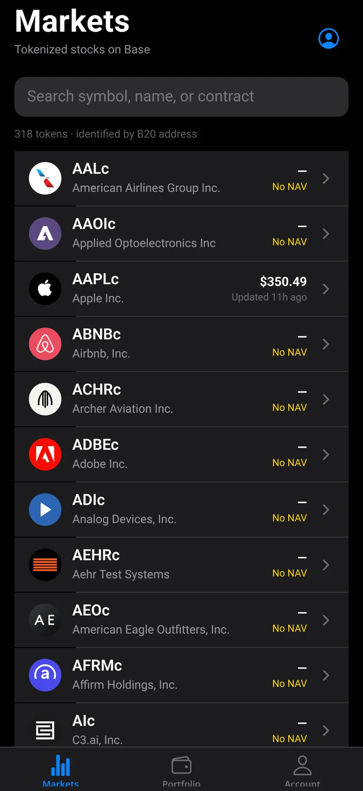
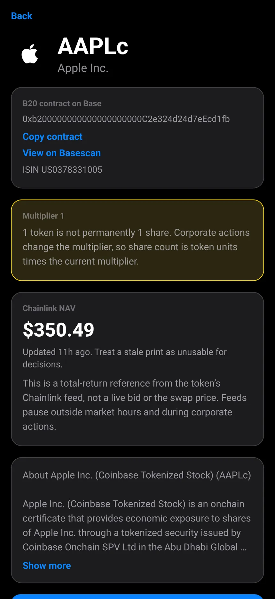
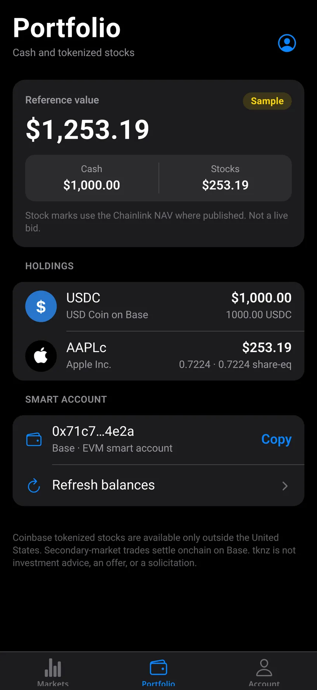
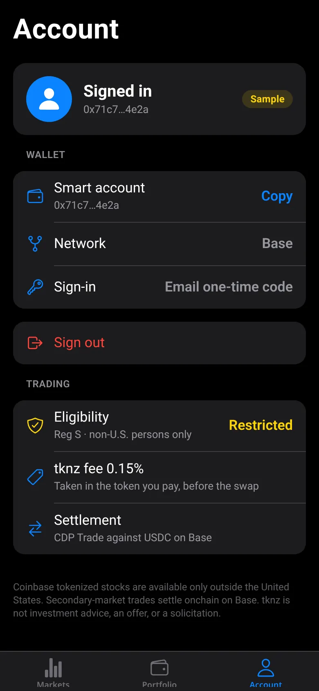
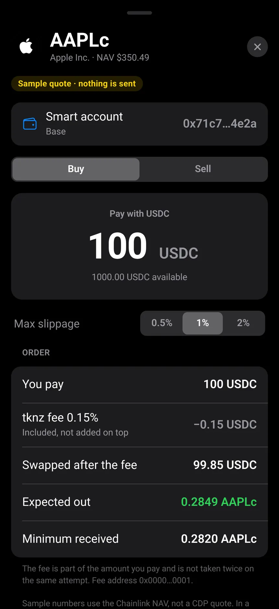

iOS app · iPhone and iPad · MOBI MEDIA, INC.
Tokenized stocks, held on Base.
tknz Stocks is an iOS app for browsing and holding Coinbase tokenized stocks (B20) on Base, and for swapping Base USDC for a tokenized stock when you are eligible outside the United States.

- Platform
- iOS — iPhone and iPad
- Assets
- Coinbase tokenized stocks (B20)
- Network
- Base
- Account
- Base smart account via Coinbase Developer Platform
- Fee
- 0.15% per trade, collected onchain
- Availability
- Outside the U.S. only, under Regulation S
Pre-release previews. Screens marked “Sample” or “Preview” use sample data; nothing is sent in those previews.
Browse the public catalog.
Open the public catalog of Coinbase tokenized stocks on Base and search by symbol, name, or contract. Every stock has a detail page with the facts that matter onchain.
- Symbol
The tokenized stock’s ticker and issuer name.
- B20 contract
The token’s contract address on Base.
- Multiplier
The current multiplier. One token is not permanently one share.
- NAV
The Chainlink total-return reference. Not a live bid.

Sign in. Get a Base smart account.
Sign in with email, SMS, Google, or Apple through Coinbase Developer Platform (CDP). Signing in creates a Base smart account, which holds your USDC and tokenized stocks.
- Sign-in
Email, SMS, Google, or Apple
- Provider
Coinbase Developer Platform (CDP)
- Account
Base smart account

Sample data

Sample data
Swap USDC for a tokenized stock.
When the Regulation S eligibility gate clears, swap Base USDC for a tokenized stock. Trades settle onchain on Base.
If a swap doesn’t finish, the open attempt stays visible in the app across restarts, so you can see it and follow up.

Sample quote
A 0.15% tknz fee, collected onchain on each trade.
It is taken from the amount you pay, before the swap. The fee is included in the amount you pay, not added on top.
- The app makes an ERC-20 transfer of the fee, in the token you pay.
- The swap then uses only the remainder.
| You pay | 100.00 USDC |
|---|---|
| tknz fee 0.15%ERC-20 transfer, before the swap | −0.15 USDC |
| Swapped after the fee | 99.85 USDC |
Same figures as the sample quote in Fig. 5.
Outside the United States only.
Trading is offered under Regulation S to people outside the United States. U.S. persons and people in restricted jurisdictions cannot open a buy path in the app.
-
A
App Store
Storefronts exclude the United States and U.S. territories.
-
B
In-app gate
The eligibility gate also blocks:
- United States
- U.S. territories
- Cuba
- Iran
- North Korea
- Syria
-
C
Unknown country
If your country cannot be determined, the gate does not fail open.
Important — read before you trade.
- This is not investment advice. tknz is not a broker-dealer, exchange, alternative trading system (ATS), investment adviser, or bank, and nothing here is a solicitation to buy or sell securities.
- Secondary-market trades settle onchain on Base.
- Crypto and tokenized equities involve risk of loss.
- One B20 token is not permanently one share. The share-equivalent count uses the current multiplier, which can change with corporate actions.
nav_priceis a Chainlink total-return reference, not a live execution or swap price. Feeds can go stale outside market hours.